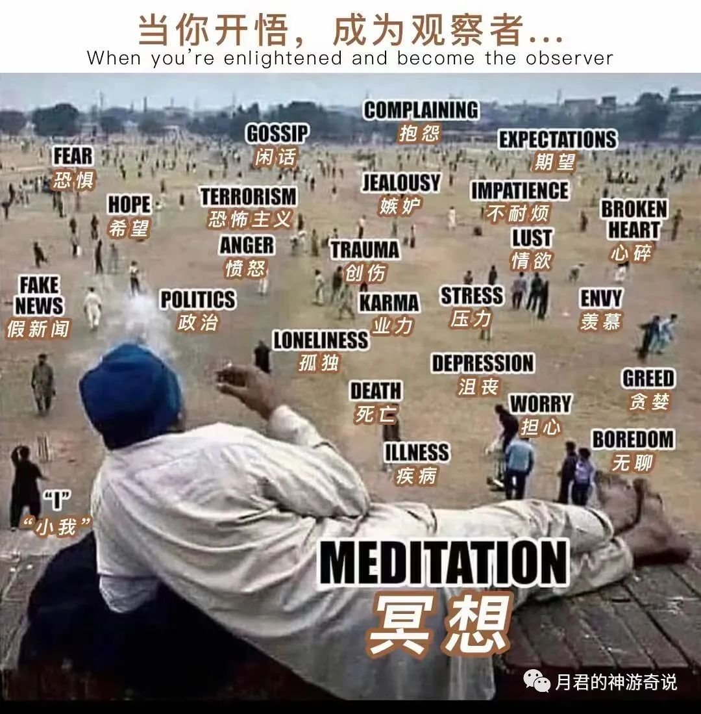

月君：关系幻
原创 月君 月君的神游奇说 2022-11-03 11:47 发表于北京
原文链接(长) 原文链接(短)
所有关系=游戏组队关系。平等的关系，你情我愿。
执着什么，依赖什么，最后变成了不平等，依赖索取，没有了尊重，只有伤害。
那么关系就会扭曲，不等，变成控制他人，奴隶他人，乖乖做我关系里的“听话人”，这是最邪恶，最负面的能量。没有任何爱可言。变成了交易商品一样，自己付出了多少，就得获得对应的报酬。最后变成互相算计，自己做了什么，应该从对方身上获得对应的利益才罢手，由此业力执着产生，痛苦循环开始。
业力果实=自己的执着于此，创造了对应的结果。消除执着，不再抓着带刺的玫瑰，痛苦即结束。
“听话人”要做的，就是恢复自由意识，行使平等的权限，脱离需要对方，需要依赖，需要认同。
而不是反过来又需要他，变成他一样，想反控制他。这样又纠缠在一起了。
别人已经放下，不执着，不纠缠曾经的。
你还在纠缠执着，就是自己创造幻相，自我伤害攻击中。内耗就是自作自受而来的。
外求者需要别人施舍给予。内求者自己发光，自由自在。
外求者需要别人认同才能去行使自己的自由意识，如同机器人，需要主人下达指令。
内求者自己决定了就做，因为你决定的事情和任何人无关参与的情况下，那么就不需要别人的认同。
机器人程序指令比例越多，意识自由觉醒程度越低。频率越低。各种不自由。被自己认为的绑架，被他人给予的各种关系绑架。
机器人程序指令比例越少，意识自由觉醒程度越高，频率越高。各种自由。全方面自由。不被任何关系绑架，定义。
